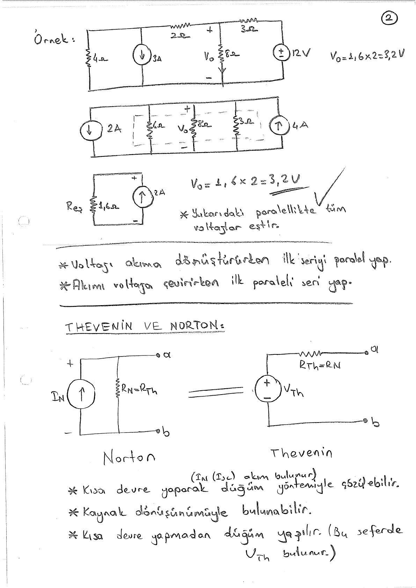
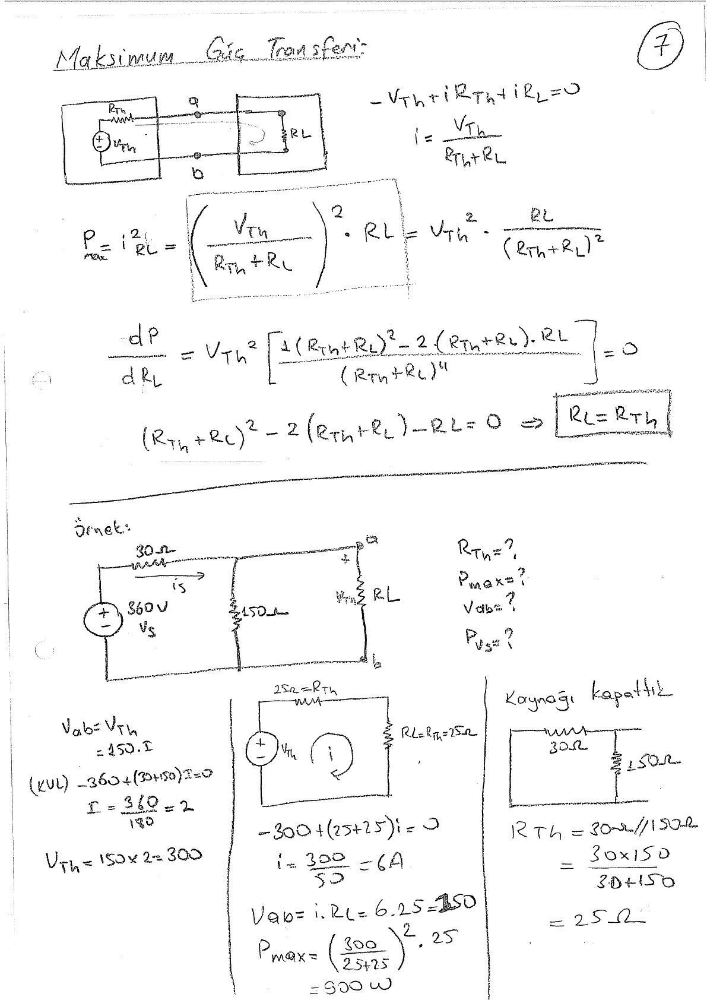
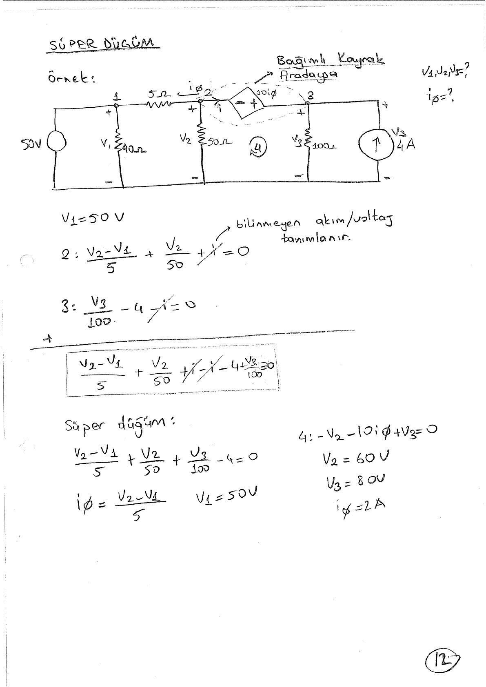
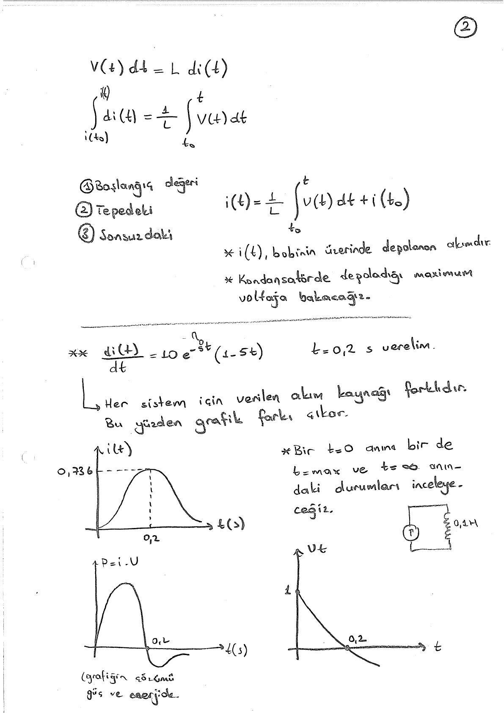
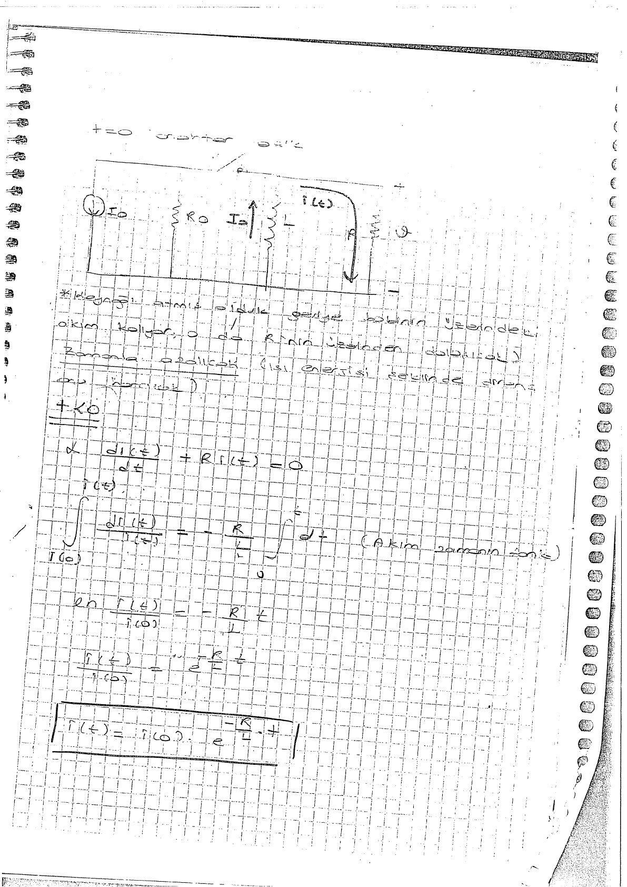
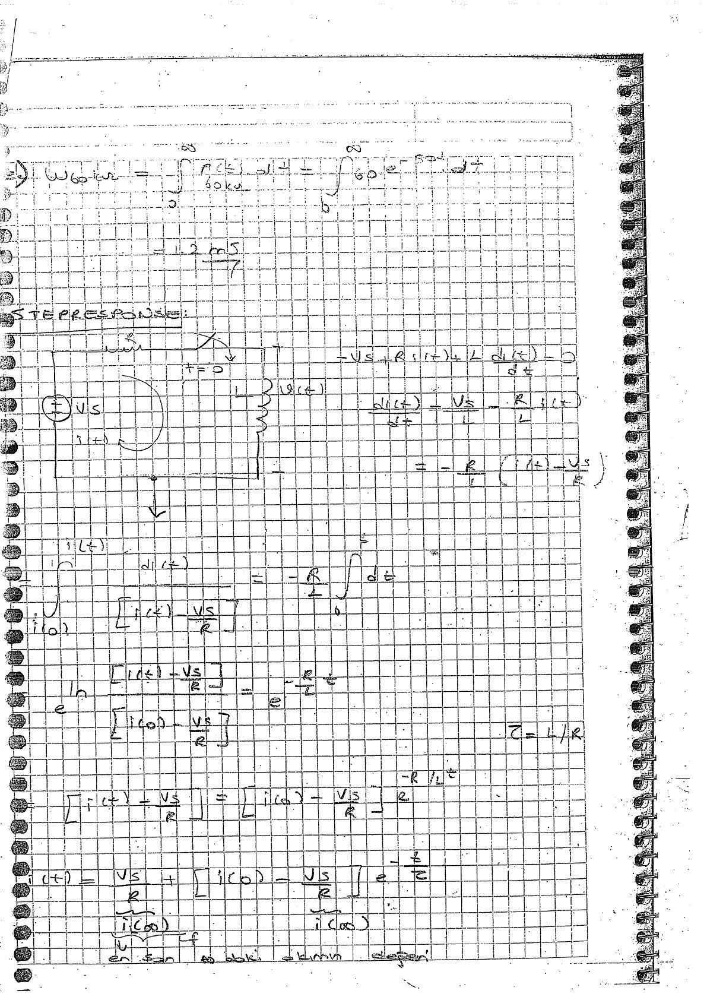

· EEM201
EEM201 Devre Teorisi I: Kaynak Dönüşümü, Düğüm Analizi ve RC–RL El Yazısı Notları
EEM201 – Devre Teorisi I · 22.01.2015 · 18.10.2026
Bu yazı, EEM202 klasöründe Cilt1 adıyla saklanan, bir arkadaşın hazırladığı 53 sayfalık el yazısı devre analizi notunu içeriyor. Sayfalarda “Devre-I” ve bölüm başlıkları var; içerik EEM201 Devre Teorisi I altında sınıflandırıldı. Hazırlayanın adı ve ders tarihi belirtilmemiş; PDF 22 Ocak 2015'te taranmış. Başlıklar, ana formüller ve seçilmiş sonuçlar metne aktarıldı. Taranmış PDF yazının sonunda indirilebilir.
Konu ve sayfa haritası
| PDF sayfaları | Konu |
|---|---|
| 1–9 | Kaynak dönüşümleri, Thevenin–Norton, maksimum güç aktarımı |
| 10–13 | Kareli defterden kaynak dönüşümü ve süperpozisyon örnekleri |
| 14–15 | İşlemsel yükselteçlerin giriş, çıkış ve besleme uçları |
| 16–23 | Akım, gerilim, güç, kaynaklar, Kirchhoff ve bölücü devreler |
| 24–31 | Düğüm gerilimi, süperdüğüm, çevre ve süperçevre yöntemleri |
| 32–37 | Bobin ve kondansatör, türev ve integral, güç ve enerji |
| 38–43 | RL doğal tepki, eşdeğer direnç, zaman sabiti |
| 44–47 | RC doğal tepki ve anahtarlama örnekleri |
| 48–53 | Basamak tepkisi, başlangıç/son değer ve op-amp örneği |
Kaynak dönüşümü ve eşdeğer devre
Seri dirençli gerilim kaynağı ile paralel dirençli akım kaynağının uç davranışı V_s = I_sR bağıntısıyla eşlenir. Dönüşümden sonra seri ve paralel dirençler birleştirilir.
- Thevenin eşdeğeri: V_Th gerilim kaynağı ve seri R_Th.
- Norton eşdeğeri: I_N akım kaynağı ve paralel R_N.
- R_Th = R_N, V_Th = I_NR_Th.
- Açık devre gerilimi V_Th; kısa devre akımı I_N'dir.
- Bağımsız kaynaklar kapatılabilir; bağımlı kaynaklar korunur. Test kaynağıyla R_Th = V_T/I_T bulunabilir.
Üçüncü sayfadaki örnekte V_Th = 32 V, I_sc = 4 A, dolayısıyla R_Th = 8 Ω. Dördüncü sayfadaki bağımlı kaynak örneğinde V_Th = −5 V, I_sc = −50 mA, R_Th = 100 Ω yazıyor.

Maksimum güç aktarımı
Dirençli yük için:
P_L = V_Th²R_L/(R_Th + R_L)².
R_L'ye göre türev sıfıra eşitlenerek R_L = R_Th koşulu bulunuyor. Bu koşuldaki güç P_max = V_Th²/(4R_Th).
360 V kaynaklı örnekte R_Th = 25 Ω, V_Th = 300 V; yük akımı 6 A ve yük gücü 900 W. Bir sonraki örnekte V_Th = 22 V, R_Th = 9 Ω ve güç yaklaşık 13,44 W.
Not: Kontrol hesapları 300²/(4·25) = 900 W ve 22²/(4·9) ≈ 13,44 W verir.

Temel devre büyüklükleri
- i = dq/dt: birim zamanda geçen elektrik yükü.
- v = dE/dq: birim yük başına enerji.
- p = vi; işaret, akımın seçilen gerilim referansına göre yönüne bağlıdır.
- v = Ri, G = 1/R.
- Direnç gücü p = i²R = v²/R.
Kirchhoff akım yasası düğümde giren ve çıkan akımların cebirsel toplamını; gerilim yasası kapalı çevredeki gerilimlerin cebirsel toplamını sıfıra eşitler.
Seri dirençlerde aynı akım, paralel dirençlerde aynı gerilim vardır. Gerilim bölücüsünde V₀ = V_sR₂/(R₁ + R₂). İki paralel dirençli akım bölücüsünde bir koldaki akım karşı kolun direnciyle orantılıdır.
Düğüm ve çevre yöntemleri
Düğüm yönteminde her bilinmeyen düğüm için KCL yazılır. İki bilinmeyen düğüm arasındaki gerilim kaynağı süperdüğüm oluşturur; kaynak gerilimi ek denklem verir.
Çevre yönteminde KVL kullanılır. İki çevre arasındaki akım kaynağı için süperçevre kurulur; çevre akımlarının farkı kaynak akımına eşitlenir. Bağımlı kaynağın kontrol değişkeni de bilinmeyenlerle ifade edilir.
25. sayfadaki ilk düğüm hesabı V₁ = 40 V, kaynak gücü −100 W verir. Negatif işaret, seçilen referansla kaynağın devreye güç verdiğini gösterir. Süperdüğüm örneğinde V₁ = 50 V, V₂ = 60 V, V₃ = 80 V sonuçları işaretlenmiştir.

Op-amp notları
Notlarda eviren ve evirmeyen giriş, çıkış, pozitif ve negatif besleme uçları gösteriliyor. Besleme sınırları ve doyum vurgulanıyor. Son sayfada ±6 V ile beslenen bir yükselteçte gerilim kazancı, çıkış akımı ve yük direnci sınırları inceleniyor.
Bobin ve kondansatör
Bobin için v_L(t) = L·di_L(t)/dt ve
i_L(t) = i_L(t₀) + (1/L)∫[t₀,t]v_L(λ)dλ.
Kondansatör için i_C(t) = C·dv_C(t)/dt ve
v_C(t) = v_C(t₀) + (1/C)∫[t₀,t]i_C(λ)dλ.
Depolanan enerjiler w_L = Li²/2, w_C = Cv²/2. Seri bobinlerde endüktanslar toplanır; paralel bobinlerde tersleri toplanır (manyetik bağlaşım olmayan örnekler). Kondansatörlerde paralel sığalar toplanır, seride tersleri toplanır.
L = 0,1 H ve i(t) = 10t e^(−5t) örneğinde v(t) = e^(−5t)(1 − 5t). Akım t = 0,2 s'de en büyük değerine ulaşırken gerilim sıfır olur.

RL ve RC doğal tepkileri
Kaynak devreden ayrıldığında depolanmış enerji dirençlerde harcanır:
- RL: i_L(t) = I₀e^(−t/τ), τ = L/R_eş.
- RC: v_C(t) = V₀e^(−t/τ), τ = R_eşC.
Notlarda anahtarın öncesindeki kalıcı durum, t = 0⁺ anındaki süreklilik ve depolama elemanının gördüğü eşdeğer direnç ayrı ayrı hesaplanıyor. Bobin akımı ve kondansatör geriliminin başlangıç değerleri yeni devrenin çözümüne taşınıyor.

Basamak tepkisi
Birinci mertebeden devrenin değişkeni başlangıç değerinden son değerine üstel yaklaşır:
x(t) = x(∞) + [x(0⁺) − x(∞)]e^(−t/τ).
Notların son bölümünde RL ve RC devreleri bu yöntemle çözülüyor. Bobinli örneklerde önce i_L(0⁺), i_L(∞) ve τ; kondansatörlü örneklerde v_C(0⁺), v_C(∞) ve τ bulunuyor. Son sayfalarda bunlardan direnç akımı, güç ve diğer kol gerilimleri çıkarılıyor.
